Sub-Ångstrom 3D Resolution,
Large-Volume Imaging
and Automation Advances
in Electron Ptychography
Outline
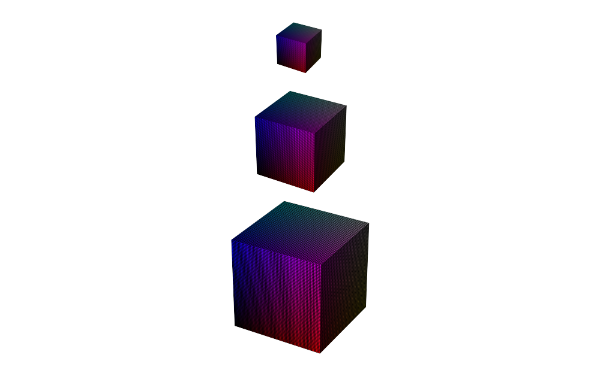

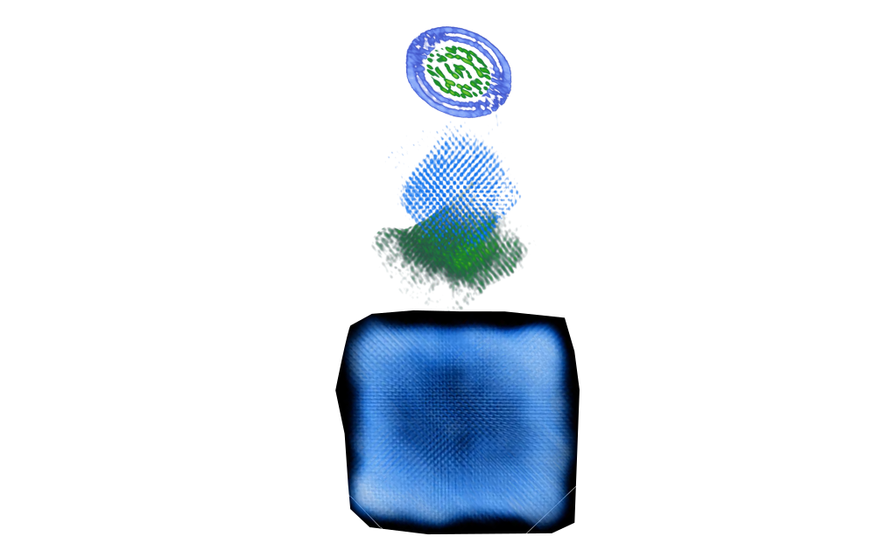
Motivation: “We can compute what we cannot yet see”
The gap between atomistic simulations and 3D atomic resolution imaging
- ML potentials are now probing 108 atoms at picosecond–nanosecond time‑steps
- 2024: [1] polycrystalline Cu, 100M atoms
- 2023: [2] SARS-CoV-2 Spike glycoprotein in water, 100M atoms
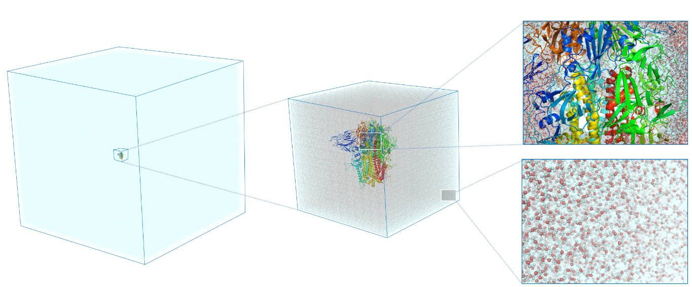
- 3D atomic resolution imaging has been limited to max. volumes of ~(15nm)3, 104 - 105 atoms
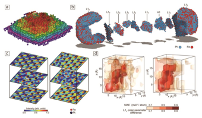
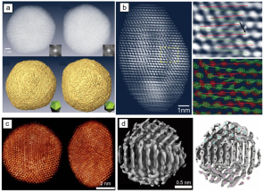
Adapted from [3]
Ptychographic electron tomography can be developed into an experimental counterpart that can shorten this gap by combining ML-enhanced reconstructions, automation & dose‑efficient scanning.
[1] Shang et al. 10.1109/SC41406.2024.0001 (2024) [2] Musaelian et al. arXiv:2304.10061v (2023) [3] Zhou, J. MRS Bulletin 45, 290–297 (2020).
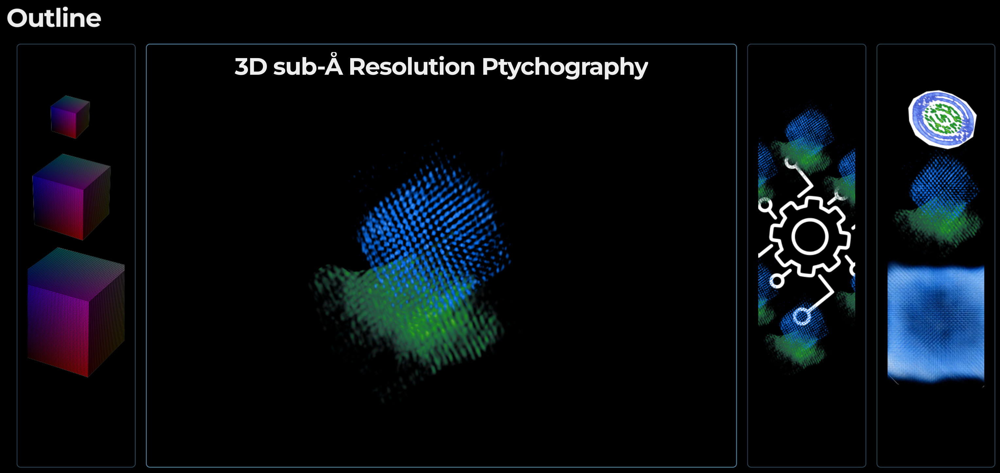
4D-STEM ptychographic tomography
- Multi-slice ptychography has been limited to ~2nm depth resolution (in some cases sub-nm)
- Introduce tilt-series to reach higher depth resolution
. . .
Atomic 3D resolution achievable with 4D-STEM tilt series
Successive approximations in STEM ptychography
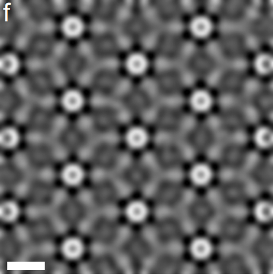
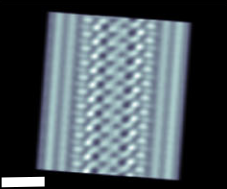

\(\psi_{out} = (1+i\phi)\psi_{in}\)
\(\psi_{out} = A(\vec{r}) \cdot e^{i\sigma V(\vec{r})} \cdot \psi_{in}\)
\(\psi_{out} = \mathcal{M}_V(\psi_{in})\)
✅ Real-time results & calibration
✅ Fast reconstruction for thin samples
✅ 2.5D reconstruction for thick samples
✅ highest x-y resolution
. . .
Each approximations has its use in ptychographic tomography
Our protagonists today: nanoscale particles and quantum materials
1️⃣ Transition metal chalcogenides in the few-chain limit
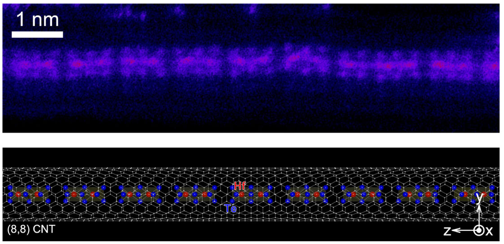
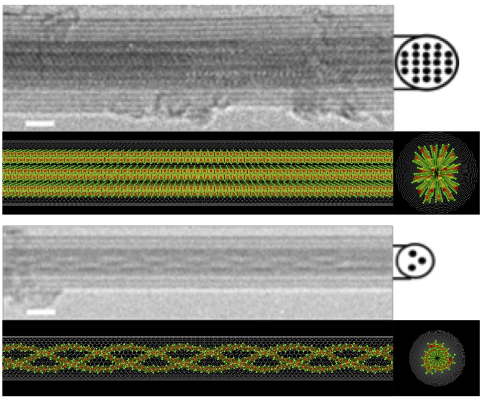
2️⃣ Strain-engineered Core-Shell Oxide particles
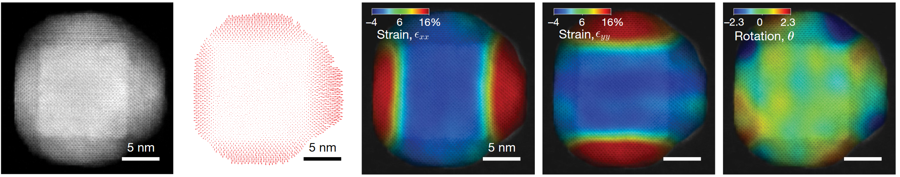
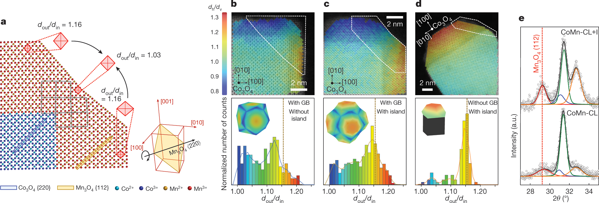
3️⃣ Strain-engineered chiral nanoparticles

. . .
Quantum materials and nanoparticles are ideal test cases for our atomic resolution 3D imaging as we develop scalable algorithms
First unknown 3D atomic structure solved with 4D-STEM tomography
Approach:
- 4D-STEM tilt series
- mixed-state ptychography of all tilt angles
- Joint linear tomography and alignment
- Sub-pixel atomic peak tracing
- 3D atomic structure determination
Elliptic double-wall CNT and complex inner structure resolved in 3D
Pelz et al. (2023)
Ptychographic Tomography Solves Nanostructures


. . .
First 3D atomic structure solved with phase-contrast tomography.
Novel ZrTe2 phase, confirmed stable with DFT simulations.
Pelz et al. (2023)
Depth Resolution Progress Over Time
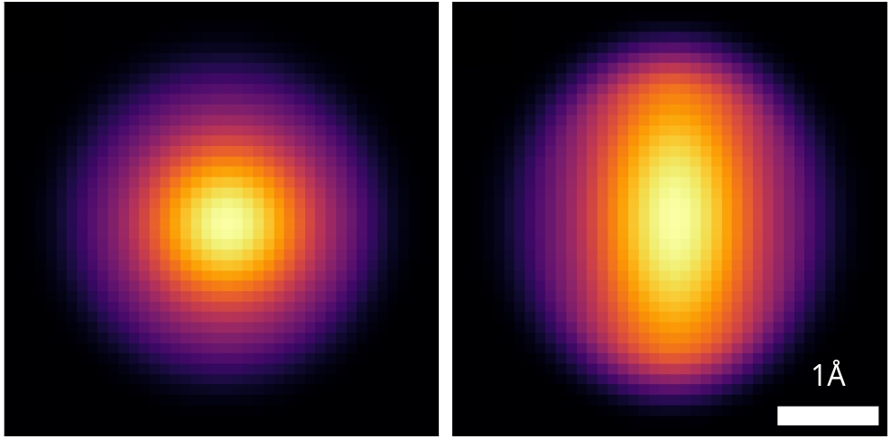


Algorithm development drives resolution records and depth of focus enhancements
Next step: Multi-Slice Ptychographic Tomography
for each tilt angle
and project the potential along z
✅ Advantages:
- Decouple tomographic alignment from ptychographic reconstruction
- Can use positions and alignment as input to E2E-MSPT
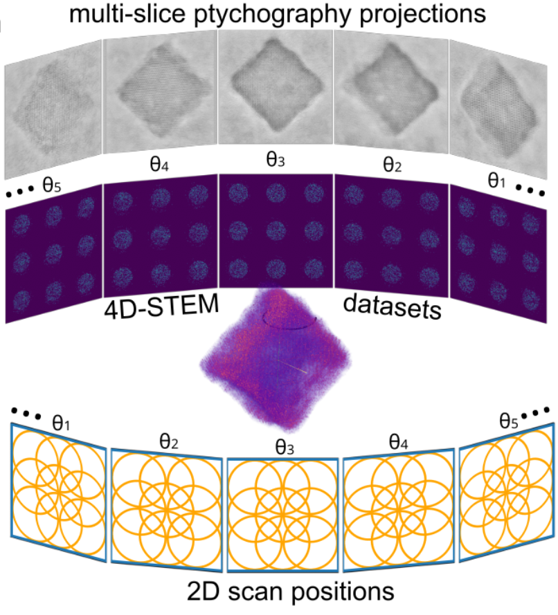
❌ Disadvantage:
- Loses some 3D info from MSP


Romanov et al. (2024)
Joint Tomography and Rigid Alignment enables atomic resolution of beyond-DOF volumes
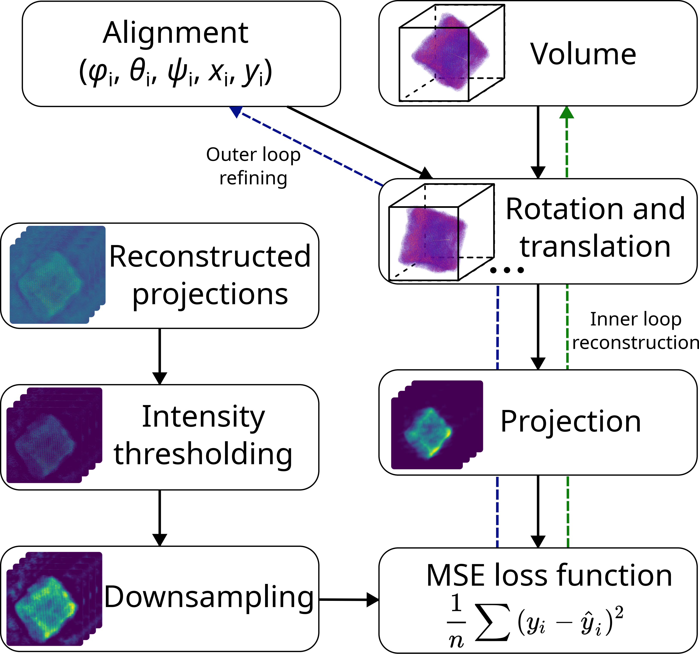
Outer loop: rigid alignment
Inner loop: fixed-alignment reconstruction
Enabled by reaching sub-pixel alignment at each scale
Romanov et al. (2024)
3x DOF volumes display atomic resolution

Volume size: (18.2 nm)3 Voxel size: 0.3 Å
Romanov et al. (2024)
Orthoslices reveal lattice in all 3 dimensions

Lattice resolved, but Co atom contrast overpower O contrast
=> Around 1 Å z resolution required to resolve O atoms
Romanov et al. (2024)
End-to-end reconstruction - putting all pieces together
Fully E2E-MSPT reconstruction includes
- affine resampling of potential volume
- z-resampling of potential volume (save compute)
- batch-croppping and mixed-state multi-slice model
- far-field propagation
- gradient backpropagation through full model

The most accurate approximation for 4D-STEM tomography to-date.
Difficulty: initialization of the model parameters
You, Romanov, and Pelz (2024)

Successive approximations help initialize “nuisance parameters”
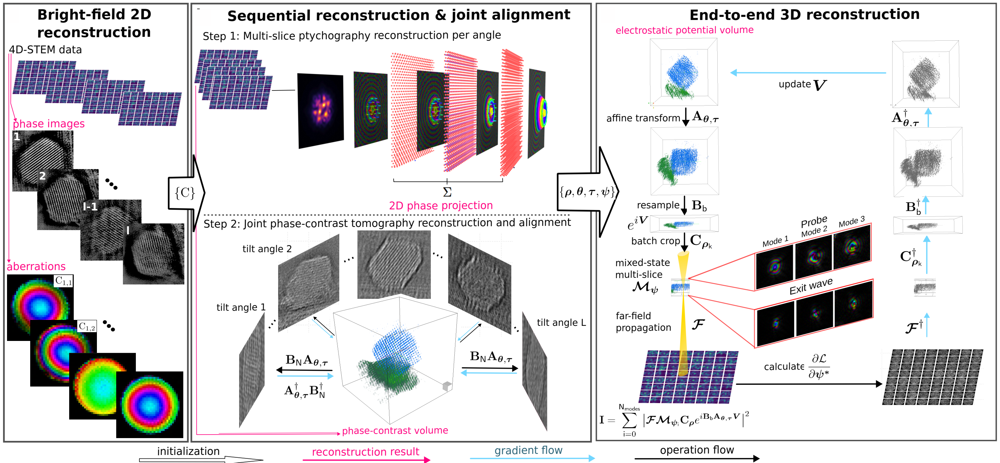
Successive initialization reduces compute
overhead of the most accurate models
You, Romanov, and Pelz (2024)
Sub-Ångstrom alignment accuracy demonstrated in simulations
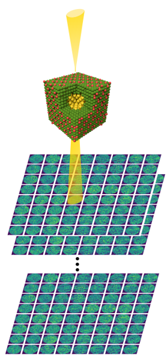
Pt-Al2O3 core-shell nanoparticle
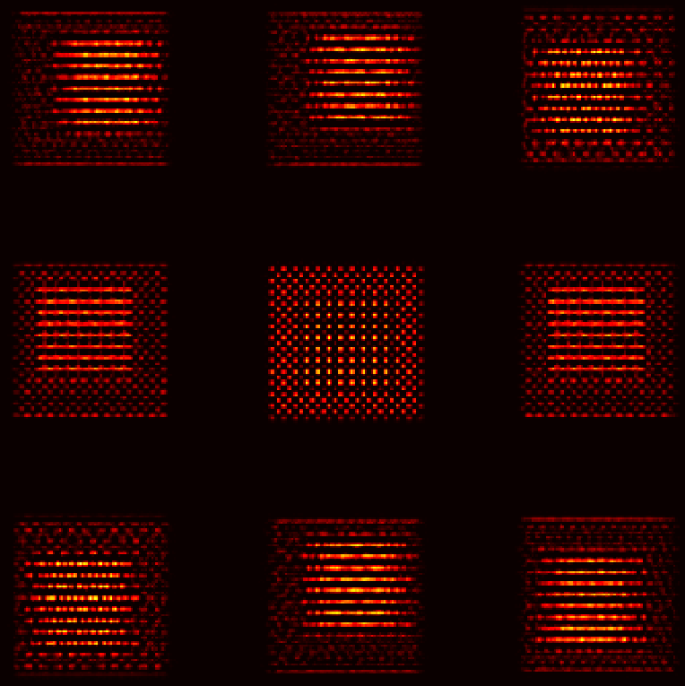
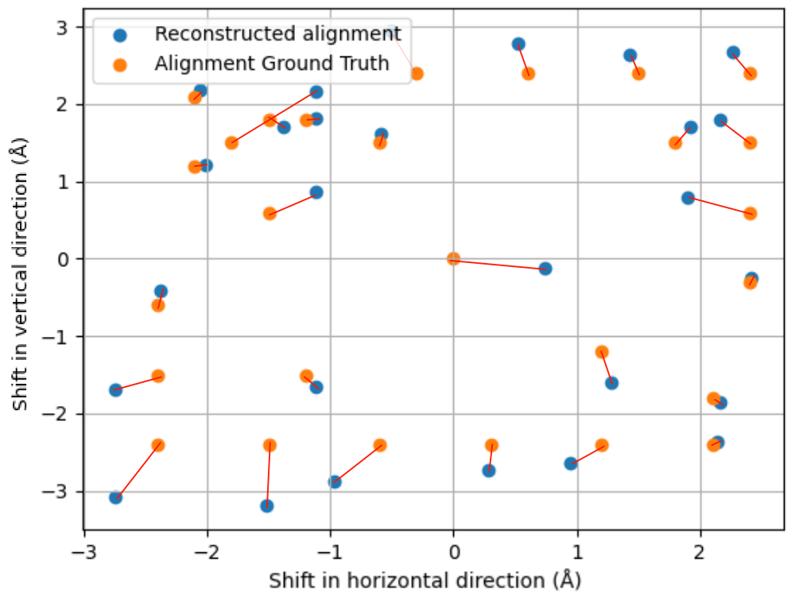
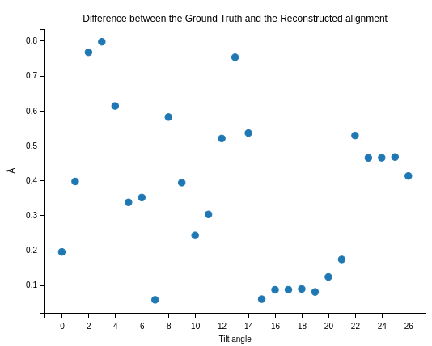
Mean alignment error < voxel size (0.4 Å)
You, Romanov, and Pelz (2024)
Limited-Angle Tomography is an option now
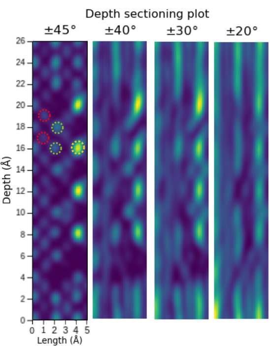

Light and heavy atoms recovered in 3D with 90-degree tilt range.
You, Romanov, and Pelz (2024)
Volume displays clear atomic contrast in 3D
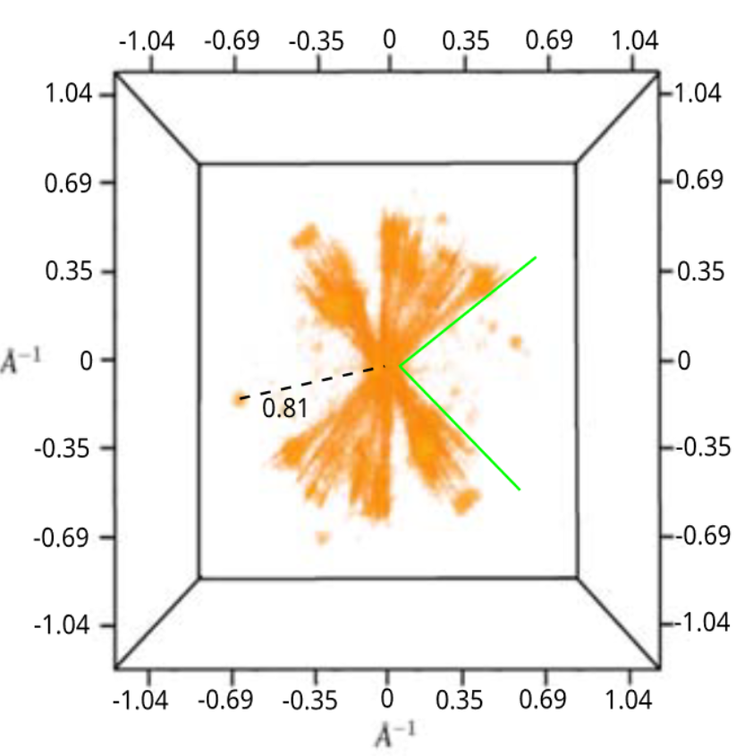
Recovery of missing wedge with only physical priors.
Reached Nyquist resolution of 0.82 Å
You, Romanov, and Pelz (2024)
Slicing through the volume reveals 3D atomic resolution
2
1

All directions recovered well
Dose reduction by sub-sampling
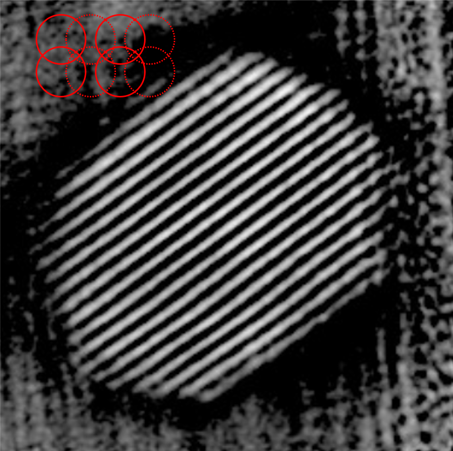
2.8 Å resolution with 2.2*104 e-/Å2 - virtual sub-sampling
0.82 Å resolution with 12x sub-sampling
You, Romanov, and Pelz (2024)
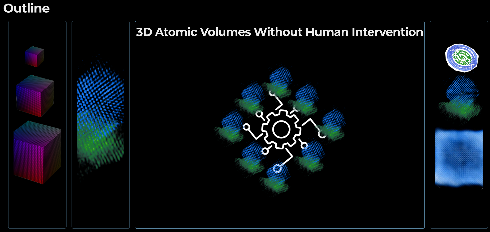
Atomic resolution tomography has been a postdoc-intensive business
Sanchez-Santolino et al. Nano Letters (2025): “This approach, first suggested by Li and Maiden and recently demonstrated in some particularly challenging systems by Pelz et al. allows one to gain the full three-dimensional knowledge via a tomographic approach […]”
So far:
highly trained microscopists required for ADF-STEM/4D-STEM tilt series data acquisition
manual collection & long algorithm chain hinder widespread adoption
How can we make it more accessible and less challenging?
Automated 4D-STEM tomography
and end-to-end reconstruction are
key to democratizing atomic resolution tomography
Acknowledgements
UCB & NCEM
Mary Scott
Peter Ercius
Alex Zettl
Scott Stonemeyer
Min Gee Cho
Sinead Griffin
Colin Ophus (now Stanford)
Monash University
Scott Findlay
DECTRIS
Daniel Stroppa Matthias Meffert
Indiana University
Xingchen Ye
Baixu Zhu
FAU
Mingjian Wu
Tadahiro Yokosawa
Shengbo You
Andrey Romanov
Nikita Palatkin
Erdmann Spiecker
Summary
- Demonstrated atomic structure determination by ptychographic electron tomography with 1.6Å resolution
- Multi-slice ptychographic tomography results show:
- Scaling to volumes beyond 3x the depth of field limit
- Signal of single oxygen atoms sufficient
- End-to-end learning alleviates the missing wedge problem and enables near-isotropic 3D resolution
- Automation should democratize the method in the near future
References 📚
Open positions at FAU
- 13 open Ph.D. positions in the new Graduate School “Correlative Microscopy”
- Develop Sensor Fusion of 4D-STEM + APT, 4D-STEM + EELS, 4D-STEM + Raman Microscopy